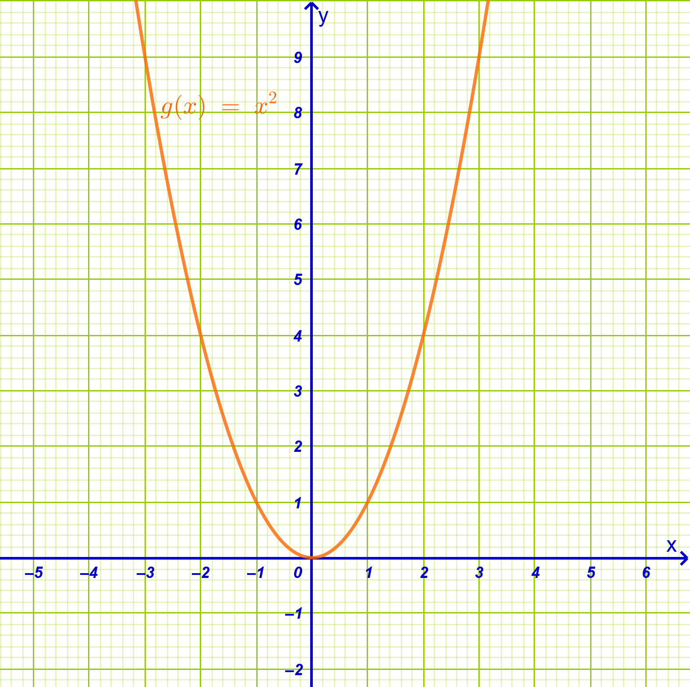
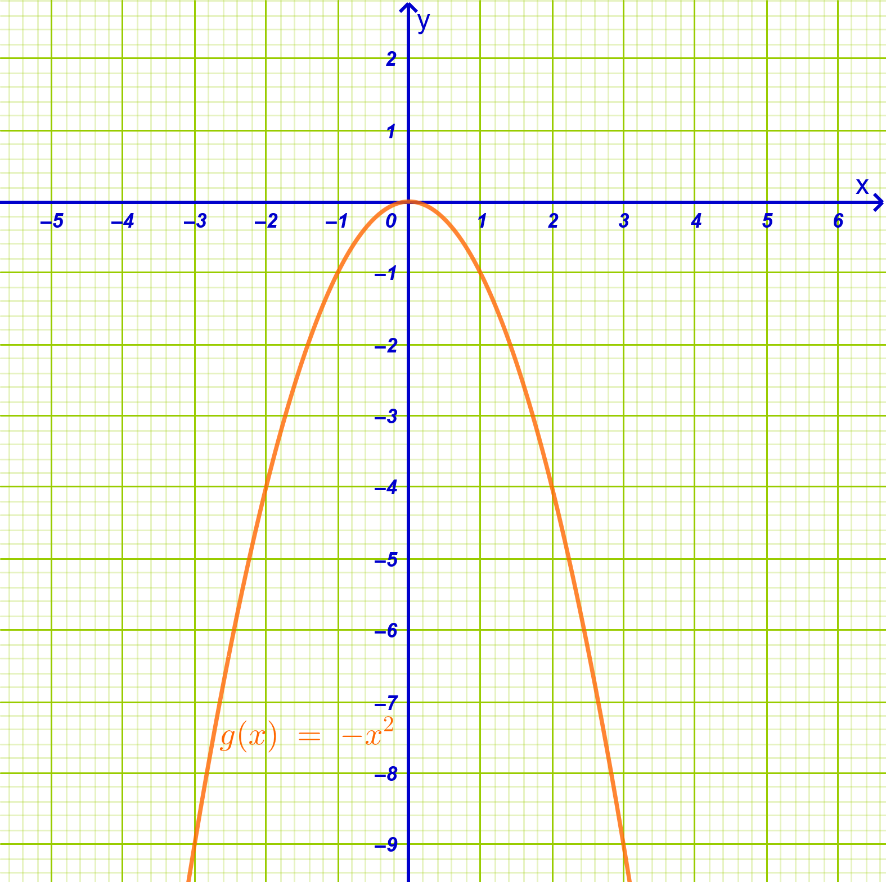
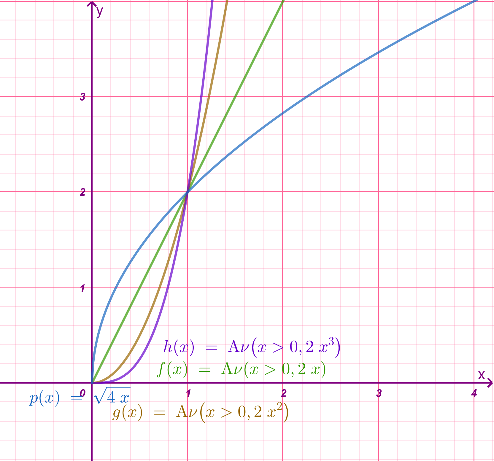
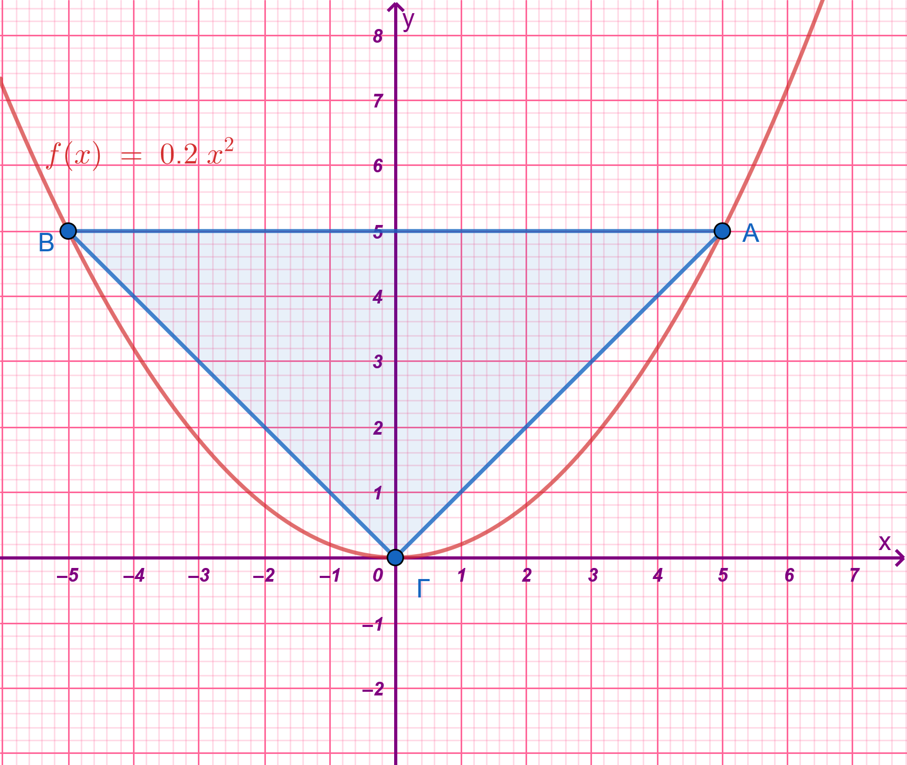

1 Μελέτη της συνάρτησης \(f(x)=αx^2\)
Με τον όρο μελέτη μιας συνάρτησης εννοούμε το σύνολο των εργασιών που πραγματοποιούμε προκειμένου να προσδιορίσουμε τα χαρακτηριστικά της και να σχεδιάσουμε τη γραφική της παράσταση.
1.1 Τι περιλαμβάνει η μελέτη μιας συνάρτησης
Η διαδικασία αυτή ακολουθεί συγκεκριμένα βήματα:
Εύρεση του πεδίου ορισμού: Προσδιορίζουμε το σύνολο των τιμών της ανεξάρτητης μεταβλητής \(x\) για τις οποίες έχει νόημα η συνάρτηση.
Έλεγχος συμμετρίας: Εξετάζουμε αν η συνάρτηση είναι άρτια (συμμετρική ως προς τον άξονα \(y'y\)) ή περιττή (συμμετρική ως προς την αρχή των αξόνων).
Μελέτη της μονοτονίας: Βρίσκουμε τα διαστήματα στα οποία η συνάρτηση είναι γνησίως αύξουσα, γνησίως φθίνουσα ή σταθερή.
Εύρεση ακροτάτων: Προσδιορίζουμε αν η συνάρτηση παρουσιάζει μέγιστο ή ελάχιστο.
Συμπεριφορά στα άκρα: Εξετάζουμε τις τιμές της συνάρτησης όταν το \(x\) πλησιάζει τα άκρα των ανοικτών διαστημάτων του πεδίου ορισμού της.
Σημεία τομής με τους άξονες: Υπολογίζουμε τα σημεία όπου η γραφική παράσταση τέμνει τους άξονες \(x'x\) (λύνοντας την \(f(x)=0\)) και \(y'y\) (βρίσκοντας το \(f(0)\)).
Πίνακας μεταβολών: Συνοψίζουμε όλα τα παραπάνω στοιχεία σε έναν πίνακα.
Σχεδιασμός: Χαράσσουμε τη γραφική παράσταση στο καρτεσιανό επίπεδο.
1.2 Η συνάρτηση \(g(x) = x^2\)
Μελέτη της συνάρτησης \(g(x) = x^2\)
Η μελέτη της συγκεκριμένης συνάρτησης (η οποία είναι της μορφής \(f(x)=\alpha x^2\) με \(\alpha=1\)) δίνει τα εξής αποτελέσματα:
Πεδίο Ορισμού: Το σύνολο όλων των πραγματικών αριθμών, \(A = \mathbb{R}\).
Σύνολο Τιμών: Το διάστημα μη αρνητικών αριθμών, \([0, +\infty)\).
Συμμετρία: Είναι άρτια συνάρτηση, καθώς για κάθε \(x \in \mathbb{R}\) ισχύει \(g(-x) = (-x)^2 = x^2 = g(x)\). Επομένως, έχει άξονα συμμετρίας τον άξονα \(y'y\).
Μονοτονία:
- Στο διάστημα \((-\infty, 0]\) είναι γνησίως φθίνουσα.
- Στο διάστημα \([0, +\infty)\) είναι γνησίως αύξουσα.
Ακρότατα: Παρουσιάζει ελάχιστο για \(x = 0\), την τιμή \(g(0) = 0\).
Σημεία Τομής: Η γραφική της παράσταση διέρχεται από την αρχή των αξόνων \(O(0, 0)\), που είναι το μοναδικό σημείο τομής με τους δύο άξονες.
Γραφική Παράσταση: Η καμπύλη της ονομάζεται παραβολή και βρίσκεται ολόκληρη πάνω από τον άξονα \(x'x\) (εκτός από την κορυφή της στο \((0,0)\)). Καθώς το \(x\) τείνει στο \(\pm\infty\), οι τιμές της συνάρτησης τείνουν στο \(+\infty\).

1.3 Η συνάρτηση \(g(x) = -x^2\)
Η μελέτη της συνάρτησης \(g(x) = -x^2\) (η οποία είναι της μορφής \(f(x) = \alpha x^2\) με \(\alpha = -1 < 0\)) περιλαμβάνει τα εξής:
Πεδίο Ορισμού: Η συνάρτηση ορίζεται για κάθε πραγματικό αριθμό, επομένως το πεδίο ορισμού της είναι το \(A = \mathbb{R}\).
Συμμετρία: Είναι άρτια συνάρτηση, καθώς για κάθε \(x \in \mathbb{R}\) ισχύει \(g(-x) = -(-x)^2 = -x^2 = g(x)\). Αυτό σημαίνει ότι η γραφική της παράσταση έχει άξονα συμμετρίας τον άξονα \(y'y\).
Μονοτονία:
- Στο διάστημα \((-\infty, 0]\) η συνάρτηση είναι γνησίως αύξουσα.
- Στο διάστημα \([0, +\infty)\) η συνάρτηση είναι γνησίως φθίνουσα.
Ακρότατα: Επειδή ο συντελεστής \(\alpha\) είναι αρνητικός (\(\alpha < 0\)), η συνάρτηση παρουσιάζει μέγιστο στην τιμή \(x = 0\), το \(g(0) = 0\).
Σύνολο Τιμών: Το σύνολο των τιμών της είναι το διάστημα των μη θετικών πραγματικών αριθμών, δηλαδή το \((-\infty, 0]\).
Σημεία Τομής με τους Άξονες: Η γραφική παράσταση διέρχεται από την αρχή των αξόνων \(O(0, 0)\), που είναι το μοναδικό σημείο τομής με τον άξονα \(x'x\) και τον άξονα \(y'y\).
Γραφική Παράσταση: Η καμπύλη της ονομάζεται παραβολή και στρέφει τα κοίλα προς τα κάτω. Η γραφική παράσταση της \(g(x) = -x^2\) είναι συμμετρική της παράστασης της συνάρτησης \(f(x) = x^2\) ως προς τον άξονα \(x'x\).
Συμπεριφορά στα άκρα: Όταν το \(x\) τείνει στο \(+\infty\) ή στο \(-\infty\), οι τιμές της συνάρτησης τείνουν στο \(-\infty\) (\(g(x) \to -\infty\)).

Οι δύο συναρτήσεις \(x^2\) και \(-x^2\) είναι συμμετρικές η μια ης άλλης με άξονα συμμετρίας το άξονα \(x'x\)
1.4 Η μελέτη της συνάρτησης \(f(x) = \alpha x^2\)
Η μελέτη της συνάρτησης \(f(x) = \alpha x^2\) με \(\alpha \neq 0\), βασίζεται στα εξής κοινά χαρακτηριστικά:
Πεδίο Ορισμού: Το σύνολο όλων των πραγματικών αριθμών, \(A = \mathbb{R}\).
Συμμετρία: Είναι άρτια συνάρτηση, καθώς για κάθε \(x \in \mathbb{R}\) ισχύει \(f(-x) = \alpha(-x)^2 = \alpha x^2 = f(x)\). Επομένως, η γραφική της παράσταση έχει άξονα συμμετρίας τον άξονα \(y'y\).
Σημεία Τομής: Διέρχεται πάντα από την αρχή των αξόνων \(O(0, 0)\), που είναι το μοναδικό σημείο τομής με τους άξονες \(x'x\) και \(y'y\).
Μορφή: Η καμπύλη της ονομάζεται παραβολή και έχει κορυφή το σημείο \(O(0, 0)\).
1.4.1 Όταν \(\alpha > 0\)
Για θετικές τιμές του συντελεστή \(\alpha\), η συνάρτηση παρουσιάζει τα εξής χαρακτηριστικά:
Μονοτονία:
- Στο διάστημα \((-\infty, 0]\) είναι γνησίως φθίνουσα.
- Στο διάστημα \([0, +\infty)\) είναι γνησίως αύξουσα.
Ακρότατα: Παρουσιάζει ελάχιστο για \(x = 0\), την τιμή \(f(0) = 0\).
Σύνολο Τιμών: Το διάστημα \([0, +\infty)\).
Γραφική Παράσταση: Η παραβολή βρίσκεται ολόκληρη πάνω από τον άξονα \(x'x\) (με εξαίρεση την κορυφή της) και στρέφει τα κοίλα προς τα πάνω.
Συμπεριφορά στα άκρα: Καθώς το \(x\) τείνει στο \(+\infty\) ή στο \(-\infty\), οι τιμές της συνάρτησης τείνουν στο \(+\infty\) (\(f(x) \to +\infty\)).
1.4.2 Όταν \(\alpha < 0\)
Για αρνητικές τιμές του συντελεστή \(\alpha\), η συνάρτηση παρουσιάζει την αντίστροφη συμπεριφορά:
Μονοτονία:
- Στο διάστημα \((-\infty, 0]\) είναι γνησίως αύξουσα.
- Στο διάστημα \([0, +\infty)\) είναι γνησίως φθίνουσα.
Ακρότατα: Παρουσιάζει μέγιστο για \(x = 0\), την τιμή \(f(0) = 0\).
Σύνολο Τιμών: Το διάστημα \((-\infty, 0]\).
Γραφική Παράσταση: Η παραβολή βρίσκεται ολόκληρη κάτω από τον άξονα \(x'x\) (με εξαίρεση την κορυφή της) και στρέφει τα κοίλα προς τα κάτω.
Συμπεριφορά στα άκρα: Καθώς το \(x\) τείνει στο \(\pm\infty\), οι τιμές της συνάρτησης τείνουν στο \(-\infty\) (\(f(x) \to -\infty\)).
1.4.3 Επίδραση της τιμής του \(\alpha\) στο “άνοιγμα” της παραβολής
Η απόλυτη τιμή του συντελεστή \(\alpha\) (\(|\alpha|\)) καθορίζει πόσο “ανοικτή” ή “κλειστή” είναι η παραβολή:
Καθώς μεγαλώνει η τιμή του \(|\alpha|\), η παραβολή γίνεται πιο “κλειστή” και πλησιάζει προς τον άξονα \(y'y\).
Καθώς μικραίνει η τιμή του \(|\alpha|\), η παραβολή γίνεται πιο “ανοικτή” και πλησιάζει προς τον άξονα \(x'x\).
Συμμετρία: Για αντίθετες τιμές του \(\alpha\) (π.χ. \(y = 2x^2\) και \(y = -2x^2\)), οι παραβολές είναι συμμετρικές ως προς τον άξονα \(x'x\).
Επιλέξτε τον δρομέα
Πατήστε Shift + > για να αυξήσετε με βήμα 0,1 την τιμή του α.
Πατήστε Shift + < για να μειώσετε με βήμα 0,1 την τιμή του α.
Τι παρατητείτε σε κάθε περίπτωση;
1.5 Μελέτη της συνάρτησης \(φ(x)=αx^3\)
Η μελέτη της συνάρτησης \(\phi(x) = \alpha x^3\) (με \(\alpha \neq 0\)), περιλαμβάνει τα εξής στάδια:
1. Πεδίο Ορισμού
Η συνάρτηση είναι πολυωνυμική, επομένως ορίζεται για κάθε πραγματικό αριθμό \(x\). Το πεδίο ορισμού της είναι το \(A = \mathbb{R}\).
2. Συμμετρία
Η συνάρτηση \(\phi(x) = \alpha x^3\) είναι περιττή.
Αυτό ισχύει διότι για κάθε \(x \in \mathbb{R}\), το \(-x \in \mathbb{R}\) και ισχύει:
\(\phi(-x) = \alpha(-x)^3 = \alpha(-x^3) = -\alpha x^3 = -\phi(x)\).Λόγω της ιδιότητας αυτής, η γραφική της παράσταση έχει κέντρο συμμετρίας την αρχή των αξόνων \(O(0, 0)\).
3. Μονοτονία
Η μονοτονία της συνάρτησης εξαρτάται από το πρόσημο του συντελεστή \(\alpha\):
Αν \(\alpha > 0\): Η συνάρτηση είναι γνησίως αύξουσα σε όλο το \(\mathbb{R}\).
Επεξήγηση: Για \(x_1 < x_2\) ισχύει \(x_1^3 < x_2^3\), οπότε \(\alpha x_1^3 < \alpha x_2^3\).Αν \(\alpha < 0\): Η συνάρτηση είναι γνησίως φθίνουσα σε όλο το \(\mathbb{R}\).
Επεξήγηση: Για \(x_1 < x_2\) ισχύει \(x_1^3 < x_2^3\), αλλά επειδή ο \(\alpha\) είναι αρνητικός, η φορά της ανισότητας αλλάζει: \(\alpha x_1^3 > \alpha x_2^3\).
4. Σημεία Τομής με τους Άξονες
Η γραφική παράσταση διέρχεται από την αρχή των αξόνων \(O(0, 0)\), καθώς για \(x=0\) προκύπτει \(\phi(0) = 0\).
Είναι το μοναδικό σημείο τομής και με τους δύο άξονες (\(x'x\) και \(y'y\)).
5. Γραφική Παράσταση
Η γραφική παράσταση της \(\phi(x) = \alpha x^3\) ονομάζεται κυβική παραβολή.
Για \(\alpha = 1\) (\(f(x) = x^3\)), μερικές χαρακτηριστικές τιμές είναι: \((-2, -8), (-1, -1), (0, 0), (1, 1), (2, 8)\).
Στο διάστημα \((0, 1)\), η καμπύλη της \(y = x^3\) βρίσκεται χαμηλότερα από τις γραφικές παραστάσεις των \(y = x^2\) και \(y = x\).
Καθώς το \(x\) τείνει στο \(+\infty\), η συνάρτηση τείνει στο \(+\infty\) (αν \(\alpha > 0\)) ή στο \(-\infty\) (αν \(\alpha < 0\)).
Συνοπτικός Πίνακας Τιμών (για \(\alpha = 1\)):
| \(x\) | -3 | -2 | -1 | 0 | 1 | 2 | 3 |
|---|---|---|---|---|---|---|---|
| \(\phi(x)\) | -27 | -8 | -1 | 0 | 1 | 8 | 27 |
Επιλέξτε τον δρομέα
Πατήστε Shift + > για να αυξήσετε με βήμα 0,1 την τιμή του α.
Πατήστε Shift + < για να μειώσετε με βήμα 0,1 την τιμή του α.
Τι παρατητείτε σε κάθε περίπτωση;
1.6 Ασκήσεις
I. Βασική Μελέτη (Πεδίο Ορισμού, Μονοτονία, Ακρότατα)
- Να γίνει η πλήρης μελέτη (πεδίο ορισμού, μονοτονία, ακρότατα, πίνακας μεταβολών) της συνάρτησης \(f(x) = 2x^2\).
- Να γίνει η πλήρης μελέτη της συνάρτησης \(f(x) = -3x^2\).
- Να βρεθεί το σύνολο τιμών των συναρτήσεων \(g(x) = 5x^2\) και \(h(x) = -7x^2\).
- Να εξετάσετε τη μονοτονία της συνάρτησης \(f(x) = \dfrac{1}{2}x^2\) στα διαστήματα \((-\infty, 0]\) και \([0, +\infty)\).
- Να εξετάσετε τη μονοτονία της συνάρτησης \(f(x) = -4x^2\) στα διαστήματα \((-\infty, 0]\) και \([0, +\infty)\).
II. Εύρεση Παραμέτρων και Σημείων
- Να βρείτε την τιμή του \(\alpha\), ώστε η γραφική παράσταση της συνάρτησης \(f(x) = \alpha x^2\) να διέρχεται από το σημείο \(A(2, 8)\).
- Να προσδιορίσετε τον πραγματικό αριθμό \(\alpha\), αν το σημείο \(M(-1, -5)\) ανήκει στην παραβολή \(y = \alpha x^2\).
- Για ποια τιμή του \(\alpha\) η συνάρτηση \(f(x) = \alpha x^2\) παρουσιάζει ελάχιστο και η γραφική της παράσταση διέρχεται από το σημείο \(P(3, 75)\);
- Να βρείτε τα σημεία τομής της παραβολής \(f(x) = 4x^2\) με την ευθεία \(y = 16\).
- Να βρεθεί ο πραγματικός αριθμός \(\alpha\), ώστε η \(f(x) = \alpha x^2\) να ικανοποιεί τη σχέση \(f(1) + f(2) = 20\) (Σημείωση: Απαιτεί αλγεβρικό υπολογισμό βάσει του τύπου της συνάρτησης).
III. Ιδιότητες και Συμμετρία
- Να αποδείξετε αλγεβρικά ότι η συνάρτηση \(f(x) = \alpha x^2\) είναι άρτια για οποιαδήποτε τιμή του \(\alpha \neq 0\).
- Ποιος είναι ο άξονας συμμετρίας και ποια η κορυφή της παραβολής \(y = -10x^2\);
- Αν \(f(x) = \alpha x^2\) και \(f(3) = 18\), να βρείτε την τιμή \(f(-3)\) χρησιμοποιώντας την ιδιότητα της συμμετρίας της.
- Να δείξετε ότι η γραφική παράσταση της \(f(x) = \alpha x^2\) διέρχεται από την αρχή των αξόνων \(O(0, 0)\) για κάθε τιμή του \(\alpha\).
IV. Συγκριτική Μελέτη και “Άνοιγμα” Παραβολής
- Να σχεδιάσετε στο ίδιο σύστημα αξόνων τις παραβολές \(y = x^2\), \(y = 2x^2\) και \(y = 0,5x^2\). Ποια είναι η πιο “κλειστή” ως προς τον άξονα \(y'y\);
- Να συγκρίνετε το “άνοιγμα” των παραβολών \(y = -4x^2\) και \(y = -x^2\). Ποια πλησιάζει περισσότερο τον άξονα \(x'x\);
- Να περιγράψετε τη γεωμετρική σχέση (συμμετρία) των γραφικών παραστάσεων των συναρτήσεων \(f(x) = 4x^2\) και \(g(x) = -4x^2\).
- Έστω οι συναρτήσεις \(f(x) = \alpha_1 x^2\) και \(g(x) = \alpha_2 x^2\). Αν \(|\alpha_1| > |\alpha_2|\), ποια από τις δύο παραβολές έχει μεγαλύτερο “άνοιγμα”;
V. Σύνθετες Ασκήσεις
- Να βρείτε την τιμή του \(\alpha\) ώστε η απόσταση του σημείου \(M(1, f(1))\) της παραβολής \(f(x) = \alpha x^2\) από την αρχή των αξόνων \(O(0,0)\) να είναι ίση με \(\sqrt{5}\).
- Να προσδιορίσετε τα διαστήματα του \(x\) για τα οποία η γραφική παράσταση της \(f(x) = 2x^2\) βρίσκεται πάνω από την ευθεία \(y = 8\).
- Να σχεδιάσετε στο ίδιο σύστημα συντεταγμένων τις γραφικές παραστάσεις των συναρτήσεων
\(ƒ(x) = 2x^2\) και g(x) = 2 και με τη βοήθεια αυτών να λύσετε τις ανισώσεις:
α. \(2x^2 ≤ 2\) και \(2x^2 > 2\).
β. Να τις λύσετε αλγεβρικά για να βεβαιωθείτε ότι τα προηγούμενα συμπεράσματα είναι σωστά.
- Να μελετήσετε την συνάρτηση
\[ φ(x)= \begin{cases} -2x^2, \:\: \text{ Αν } \:\:\ x\le0 \\ x,\:\: \text{ Αν } \:\:\ x\gt0 \end{cases} \]
- Για το παρακάτω σχήμα να κάνετε τα εξής
- α. Στο διάστημα \((0,2)\) να βάλετε σε αύξουσα σειρά τις τιμές των συναρτήσεων
- β. Στο διάστημα \((2,+\infty)\) να βάλετε σε αύξουσα σειρά τις τιμές των συναρτήσεων
- να διαπιστώσετε και αλγεβρικά τα συμπεράσματά σας.

- να διαπιστώσετε και αλγεβρικά τα συμπεράσματά σας.
- Να βρείτε το εμβαδόν του τιγώνου ΑΒΓ

ΚΑΛΗ ΜΕΛΕΤΗ!